Kawa Daun style smoke-cured coffee leaf. A field note from transformation.
The question today was simple: what happens when you smoke coffee leaves slowly over time? Not to make them taste smoky, but to understand how the smoke itself becomes part of the transformation.
This note documents one attempt to answer that through direct observation. Fresh leaf to finished cup.
Robusta: Native landrace, undisturbed valley location with perennial springs and streams. Organic soil, 70+ years on the land. Grown beneath shade canopy of mature Hevea rubber.
Arabica: Chandragiri variety, same estate, same natural growing method. Shade-grown under the same rubber canopy system.
Both varieties were processed side by side under identical smoking and drying conditions. The comparison reveals not which variety is superior, but how each responds to the same processing architecture.
Harvest moment. Leaves collected from both Arabica and Robusta. Temperature reading shows 27.2°C at leaf surface. Still carrying field moisture and green character.
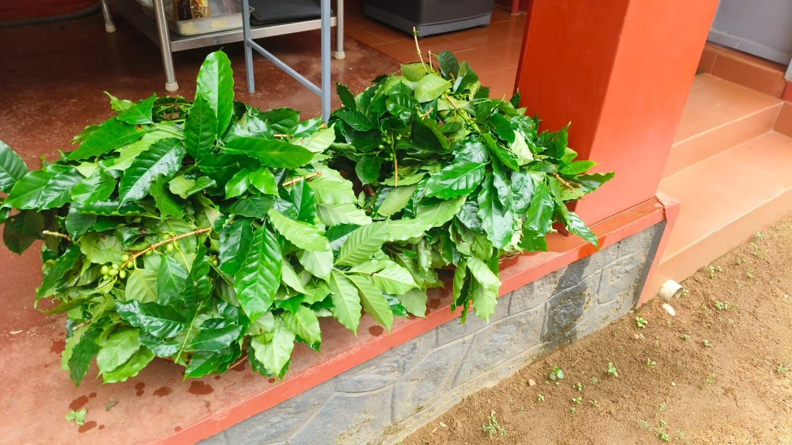
Fresh leaves from the field
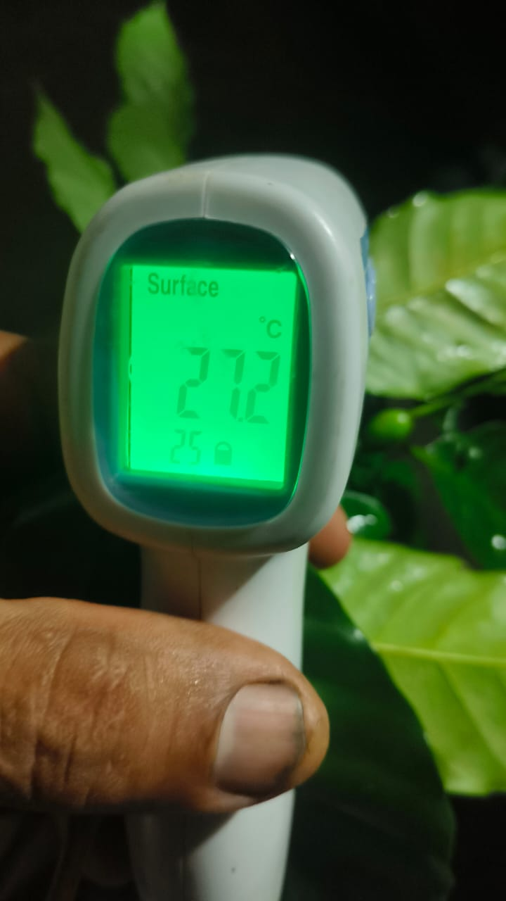
Fresh leaf temperature 27.2°C
The smokehouse is traditional rubber sheet construction. Approximately 14 ft by 14 ft, about 14 ft high, with 8 shelves. The fuel is peeled true cinnamon timber. Not chips or dust. Actual peeled logs burning slow.
Leaves are bundled and suspended inside. Door stays closed to hold the smoke. Staff reported strong smoke character in the chamber, but notably the dried leaves later showed no obvious smoke smell on casual sniffing. The smoke seems to have worked into the leaf at a molecular level rather than coating the surface.
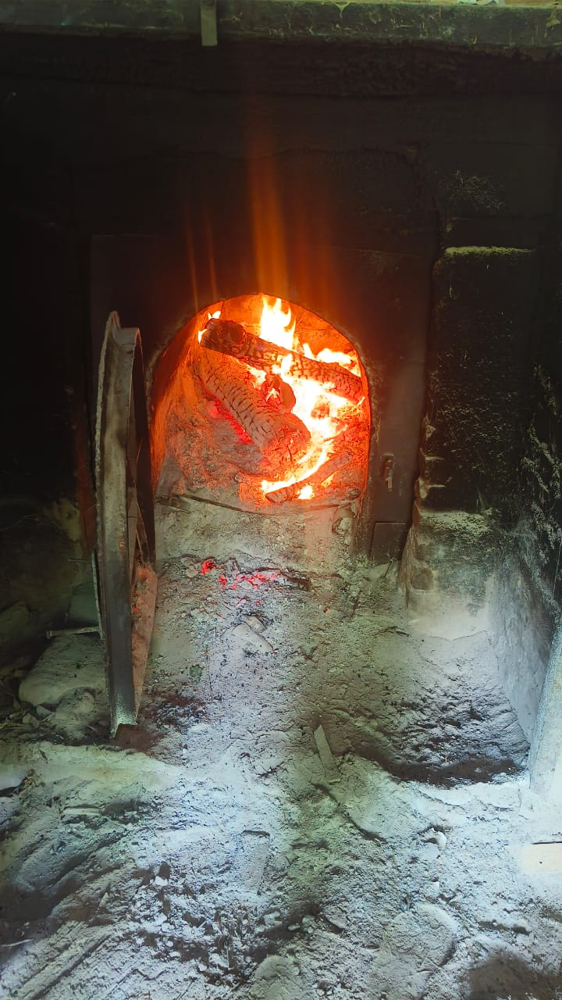
Cinnamon timber burning
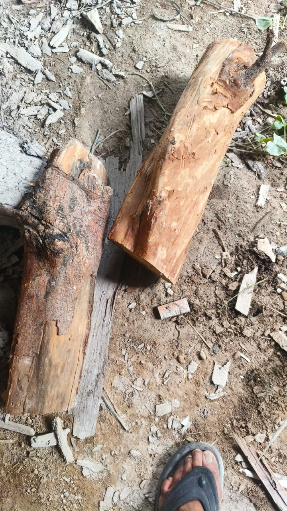
Peeled true cinnamon timber
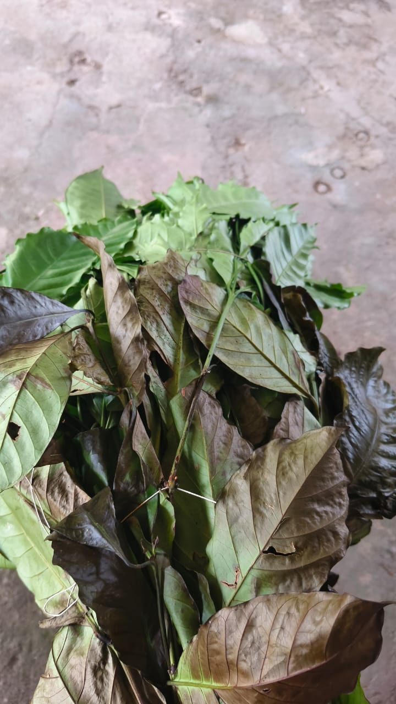
Leaves on shelf during smoke-curing, 18 June
After approximately 24 hours in the smokehouse, the initial bundles remained too green in the centre. Leaves were opened and spread across the shelves for better air circulation. Temperature now 44.0°C on the leaf surface. Smoke continues.
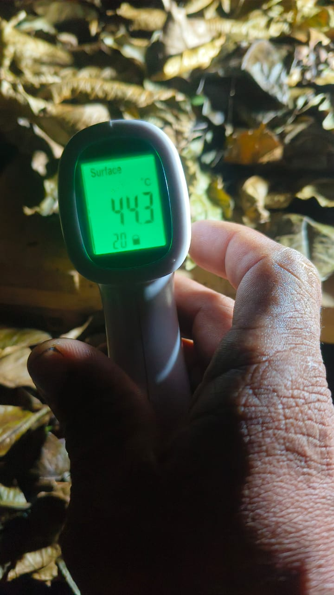
Mid-process, temperature 44.1°C, leaves opened and spread
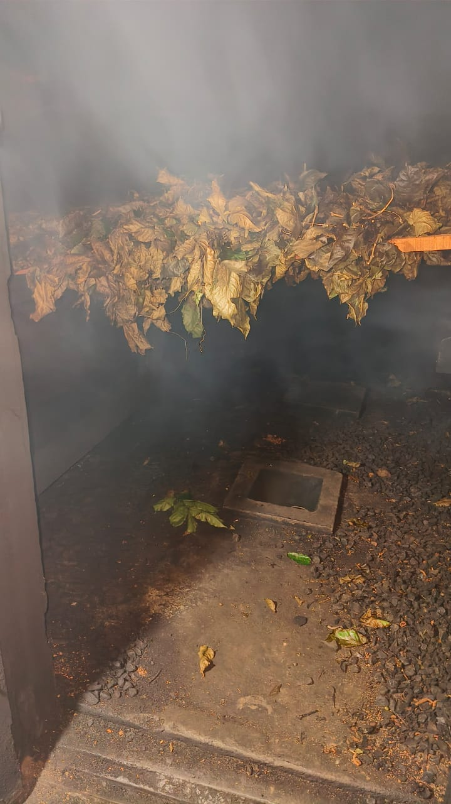
Smoke surrounding the leaves, 19 June afternoon
The drying is gradual. The smoke surrounds the leaves continuously. Combined drying and curing ran across roughly two nights and three days total.
By morning of day 3, the process is complete. Leaves show olive bronze and light brown tones. Complete collapse of fresh leaf structure. The colour is uniform and dry. Temperature reads 77.2°C.
The bundles are bagged separately. Robusta (green bag) and Arabica (white bag) kept distinct for brewing comparison.
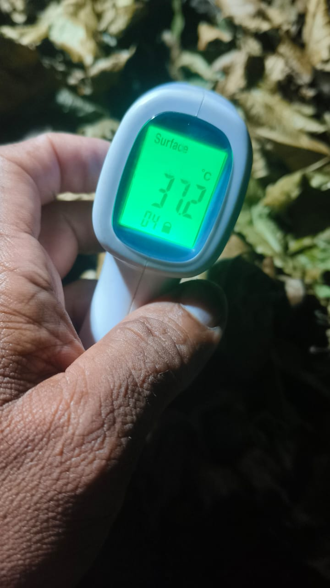
Final temperature 77.2°C on morning of 20 June
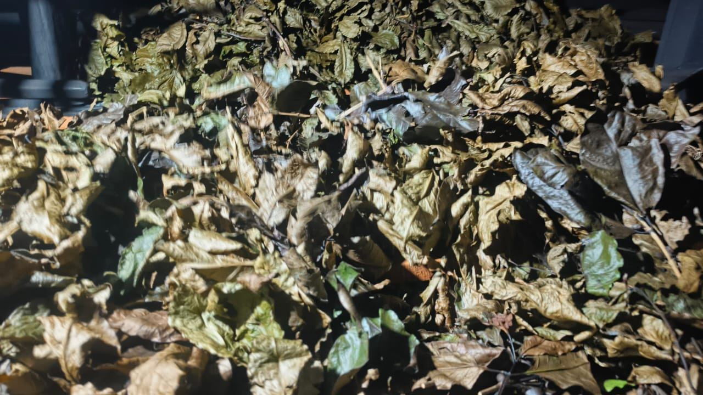
Dried leaves showing olive and bronze colour
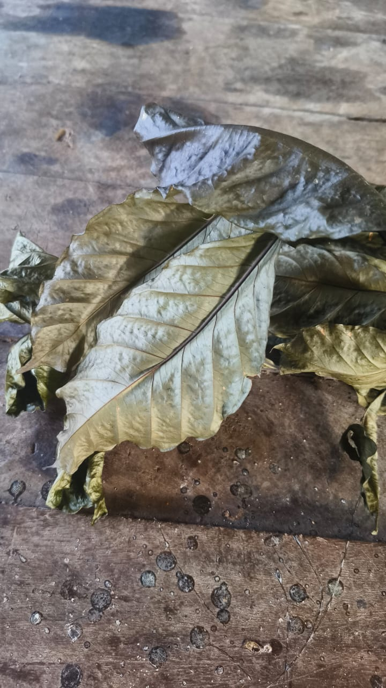
Leaf detail after smoke-curing process complete
Both batches brewed with identical parameters to ensure fair comparison. 53 grams dry leaf. 2.250 litres water. Brief rinse before decoction. Covered, simmered, then strained.
| Stage | Robusta | Arabica |
|---|---|---|
| Dry leaf | 53 g | 53 g |
| After double rinse | 218 g | 188 g |
| After decoction + strain | 270 g | 222 g |
The difference is immediate. Robusta holds more water throughout the cycle. 30 grams more after rinsing, 48 grams more in the final weight. This moisture retention may contribute to the fuller body observed in the cup.
Both batches produce clear, bright amber liquor. Highly transparent. Free from cloudiness. The appearance alone is striking. Not a typical herbal infusion. More like a refined tea or light whisky in clarity.
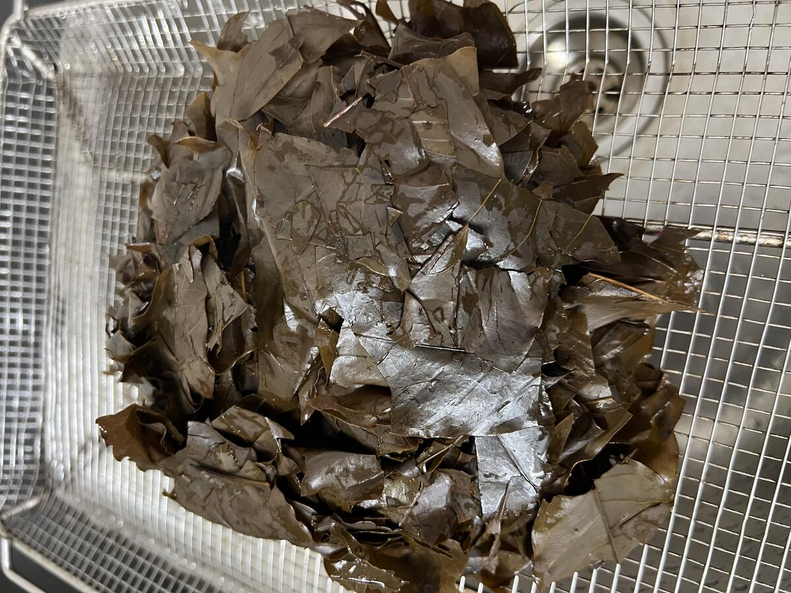
Straining the decoction
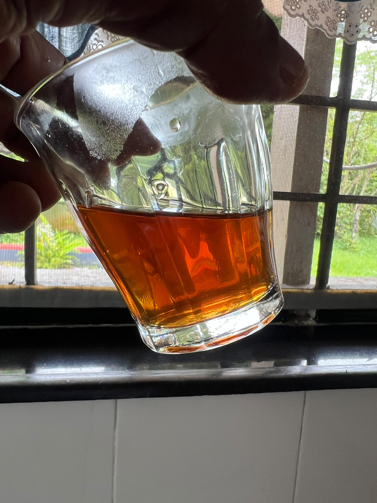
Final result. Clear, bright amber liquor with dried leaves.
Robusta: Fuller expression. More structural character. The smoke-curing process appears to favour this species. The decoction carries confidence and presence. Stronger first impression.
Arabica: Softer by approximately 10 percent. More delicate. The cup seemed gentler and more restrained. Not poor. Not weak. Simply different in tone and intensity. The smoke-curing process works, but Arabica carries it with less authority.
Working hypothesis: Robusta may be better suited to smoke-cured Kawa Daun style processing. Arabica may still be better suited to fermentation, oxidation, and other softer Buna pathways.
The smokehouse process did not merely add smoke. It produced a beverage that felt fundamentally different from the African style decoctions explored earlier. The process sits apart from fresh green leaf, Engere style brewing, oven roasting, and enzyme assisted pathways.
This suggests a larger principle: processing method becomes the dominant factor in defining coffee leaf beverages. Rather than asking "which coffee leaf is best", the more useful question becomes "which processing method best expresses each variety".
Like tea, coffee leaves may eventually support multiple distinct traditions. Smoke-cured. Oxidised. Fermented. Enzyme-assisted. Fresh green. Roasted. Aged. Each reveals different characteristics from the same plant.
Repeat with clearly tagged bundles of both species under identical conditions. Blind comparison after chilling and after 24 hours rest. Record aroma, smoke integration, sweetness, bitterness, body, returning sweetness after swallowing.
The useful result today is not that one species won. The useful result is that the smoke-cured pathway worked well enough to deserve repetition and refinement.
Citane Project. Kawa Daun style smoke-cured coffee leaf. By KoffyKraft. July 2026.